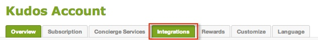
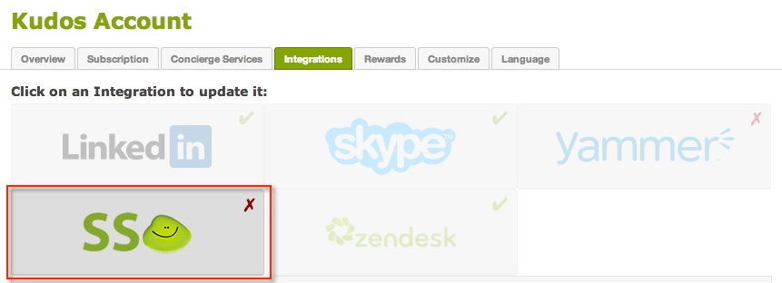

Sign in to your Kudos Plus (or higher) account that has administrator privileges. On the Admin Gear in the upper right, select Account, as shown below.


Select the SSO button, as shown below.

Cut and paste the following certificate including the BEGIN CERTIFICATE and END CERTIFICATE lines into the x.509 certificate field, shown below.
Sign into the Okta Admin dashboard to generate this value.Copy the following link to Logout To URL field, shown below.
Sign into the Okta Admin dashboard to generate this value.Enter your subdomain in the Your Kudos URL field, shown below.